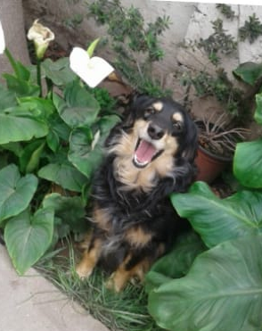

Mascotas que puedes Adoptar!!!

Khalid Kashmiri
Especie: Gato | Tamaño: Mediano | Edad: 5 años
Descripción: Khalid Kashmiri es un gato independiente pero afectuoso. Cuando toma confianza, disfruta mucho de la compañía y de un lugar tranquilo donde descansar.
Adoptar
Yoshi
Especie: Perro | Tamaño: Mediano | Edad: 7 años
Descripción: Yoshi es una perro cariñoso y jugueton. Le encanta salir a pasear y disfrutar de la compañía de las personas.
Adoptar
Pulgoso
Especie: Gato | Tamaño: Pequeño | Edad: 6 meses
Descripción: Pulgoso es un gatito alegre y curioso. Tiene mucha energía y disfruta jugando y descubriendo cosas nuevas.

Tom
Especie: Gato | Tamaño: Mediano | Edad: 3 años
Descripción: Tom es una gato dulce y tranquilo. Prefiere los espacios cómodos y disfruta de las caricias y los momentos de calma.
Adoptar
Princesa
Especie: Perro | Tamaño: Mediano | Edad: 5 años
Descripción: Princesa es un perrita alegre y curiosa. Tiene mucha energía y disfruta jugando y descubriendo cosas nuevas.

Juanito
Especie: Perro | Tamaño: Pequeño | Edad: 4 años
Descripción: Juanito es un perro amistoso y energético. Le gusta jugar y pasar tiempo acompañado, especialmente durante sus paseos.